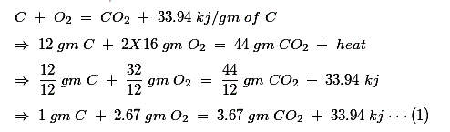
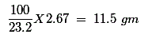
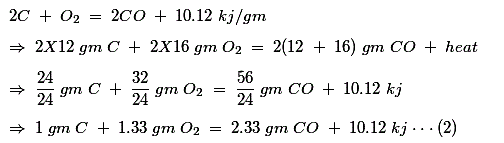
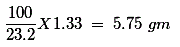
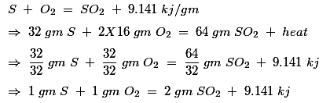
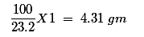
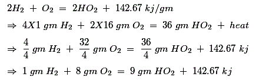
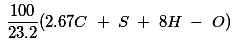

Coal Combustion for Insufficient Air
Combustion of Sulfur
Combustion of Hydrogen
Coal Content in Proximate Analysis
Unburnt Gas Loss
Dry Flue Gas Loss
Combustible in Ash Loss
Combustion is a rapid chemical reaction between fuel and oxygen. When combustible elements of fuel combine with O2, heat energy comes out. During combustion combustible elements like Carbon, Sulfur, Hydrogen etc combine with oxygen and produce respective oxides. The source of oxygen in fuel combustion is air. By volume there is 21 % of Oxygen presents in air and by weight it is 23.2 %. Although there is 79 % (by volume) nitrogen in air but it plays no role in combustion. Actually Nitrogen carries heat produced during combustion to steam boiler stack. As per combustion theory the quantity of air required for combustion is that which provides sufficient O2 to completely oxidize combustible elements of fuel. This quantity of air is normally known as STOICHIOMETRIC AIR requirement. This amount of air depends upon the nature of fuel. STOICHIOMETRIC AIR requirements for different fuels are obtained by analysis of fuel and they are given in tabular form below,
| Fuel | STOICHIOMETRIC AIR mass / unit mass of fuel |
|---|---|
| Bituminous Coal | 11.18 |
| Anttiasite Coal | 10.7 |
| Coke | 9.8 |
| Liquite | 7.5 |
| Peat | 5.7 |
| Residual Fuel Oil | 13.85 |
| Distillate Fuel Oil(Gas Oil) | 14.48 |
| Natural Gas(Methane Base) | 17.3 |
Combustion of Coal
For sufficient air,

We have already said that mass wise there is 23.2 % O2 presents in air. Hence the amount of air required to provide 2.67 gm of O2 is

As per ideal combustion theory, after combustion of one gm carbon(C), product of combustion contains only 3.67 gm of CO2 and (11.5 - 2.67 =) 8.83 gm of N2
Coal Combustion for Insufficient Air

By weight, the requirement of air for providing this much O2 is

After combustion of one gm carbon(C), product of combustion contains only 2.33 gm of CO and (5.75 - 1.33 =) 4.42 gm of N2.
From equation (1) and (2) it is clear that due to insufficient air combustion, the heat lose during 1 gm of coal combustion is (33.94 - 10.12) = 23.82 kj
Combustion of Sulfur

So, air required for 1 gm sulfur combustion, is

So, combustion product, after completing 1 gm of sulfur combustion, contains 2 gm of SO2 and (4.31 - 1 = ) 3.31 gm of N2
Combustion of Hydrogen

From combustion theory of C, S and H2 it is found that 2.67 gm oxygen is required for 1 gm carbon combustion, which implies 2.67C gm oxygen is required for C gm carbon, 1 gm oxygen is required for 1 gm sulfur combustion, which implies S gm oxygen is required for S gm sulfur and 8 gm oxygen is required for 1 gm hydrogen combustion, which implies 8H gm oxygen is required for H gm hydrogen.
Hence 1 gm of coal (fuel) which contains C gm carbon, S gm sulfur and H gm hydrogen, requires (2.67C + S + 8H) gm of oxygen for efficient combustion.
Some amount of oxygen may be contained in the fuel itself in form of different compounds and it takes part in combustion also. If O is the original weight of the oxygen presents in 1 gm of fuel, net requirement of oxygen for sufficient coal combustion is (2.67C + S + 8H - O) gm.For that the amount of air required is

This above mentioned analysis is called coal analysis for combustion.
Before efficient combustion can take place, several basic requirements must be fulfilled, most important of them are,
a) The combustion must be done with sufficient oxygen
b) There must be sufficient turbulence to promote throughout mixing of combustible and oxygen.
Coal Content in Proximate Analysis
Moisture = 8 %, volatile material = 20 to 25 %, fixed carbon = 40%, ash = 30%. Fixed carbon's combustion temperature = 900°C. Basic component of ash is Si, Al and others. Now fusion temperature of Si is 1200°C.
If the furnace temperature raises above 1100°C then Si will be fused and deposited on the tubes, as slag, causing improper heat transfer.
Now to dilute the temperature excess air and complete combustion are required.
Now, the volatile material plays important role in combustion. Less the volatile material flame will be high which may be chance for flame impingement of S/H coil.
For fulfilling the point some practical steps to taken. In practice it is always necessary to supply more air to the combustion system than it is theoretically required. Reason for that air and fuel mixing process in any combustion system, as it is not possible to ensure complete and intimate mixing of the fuel with the necessary oxygen at the point of injection. So some excess air is required for proper combustion to a reasonable minimum power, stack loss and unburnt carbon in ash.
Generally 20% excess air is allowed.
| % of Excess Air | Unburnt Carbon in Ash | C.V. Liberated in Furnace | Unburnt Gas Loss |
|---|---|---|---|
| 0 % | 10 % | 75 % | CO2, O2, N2, H2O, CO, CH4(15 %) |
| 15 % | 2 % | 97 % | CO2, O2, N2, H2, CO(1 %) |
| 100 % | 0.5 % | 99.5 % | CO2, O2, N2 |
Third process is unsatisfactory for extra fan power and convey huge amount of heat.
The coal particles should be at least 74 microns in 200 mesh. So pulveriser is required for
i) better utility of coal
ii) saving of time.
There are mainly three losses occurred during coal combustion,
1) Unburnt gas loss
2) Dry flue gas loss
3) Combustible in ash loss.
Unburnt Gas Loss
Remember the unburnt gas loss is mainly the result of burning carbon to carbon monoxide instead of carbon dioxide. It is seen that heat release in CO reaction is one third of that in CO2 reaction. So adequate supply of oxygen or excess air will quickly reduce this loss to zero.
Dry Flue Gas Loss
A further loss of heat is that due to dry flue gas. It is often referred to as the stack loss. If more excess air is admitted, this loss increases.
Combustible in Ash Loss
This loss is very high when there is little or no excess air because mixing of combustible material and oxygen is so poor. As the air quantity is increased, the loss falls rapidly. However it does not reach to "zero" because the loss depends upon two factors firstly on air - coal mixture and secondly on fineness of pulverized coal grain. More fine grain of pulverized coal helps to complete combustion more perfectly and resulting less combustible in ash loss. In practice, though, a stage is reached where it is not worth grinding the coal any finer because it will cost more to grind than the extra heat release. Practically the loss does not reach to zero. generally a high volatile coal is crushed until 75% of its bulk passes through a 200 mesh whereas a low volatile coal is crushed until 80% passes through similar mesh.
The loss gets less as excess air is added, reaches a minimum and then increases as still more excess air is added. Thus there is only one quantity of excess air which will give lower loss for the combustion of a particular fuel. For bituminous coal 15.5% excess air is optimum requirement for Coal Combustion.
 by
by